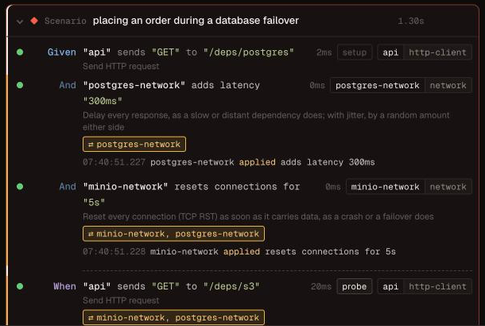
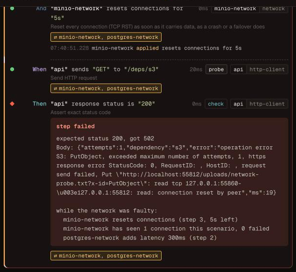

Design: network faults¶
Status: proposal, with a proof of concept on feat/network-faults.
A network resource puts a proxy between the application under test and one
of its dependency containers, so a scenario can make that dependency slow,
cut its connections, make it hang or refuse connections, and then check what
the application does. It works the same way for every dependency tomato runs
in a container, because it works on TCP: Postgres, MySQL-compatible
databases, Redis, Kafka, RabbitMQ, ScyllaDB, MinIO and anything else.
This page has three parts: what a spike found, the interface users write, and what the reports show.
Why¶
Production fails in ways a healthy test environment never does: a database
that answers in 800 ms, a broker that drops every connection during a
failover, a cache that accepts a connection and never answers. tomato can
already stop and pause containers (lifecycle) and make its own HTTP and gRPC
stubs slow or unreachable. What it cannot do is degrade a real dependency
without taking it down, and only for the application: the faults must not
reach the steps that check the result.
Spike¶
The spike embedded Toxiproxy v2.13.0 in a Go process, in front of real containers, and drove each one with the client library tomato already uses, configured the way an application would be. Each fault was applied to a pooled connection, then removed, and the client's recovery timed.
| Fault | Postgres (lib/pq) | Redis (go-redis) | S3 (MinIO, aws-sdk-go-v2) | RabbitMQ (amqp091) | Kafka (sarama) |
|---|---|---|---|---|---|
| latency 300 ms | 302 ms | 302 ms | 312 ms | 302 ms | 304 ms |
hang (timeout 0) |
client ignored its deadline, stayed blocked | i/o timeout at 2 s | deadline exceeded | deadline exceeded | deadline exceeded |
reset (reset_peer) |
connection reset by peer | EOF | request failed | EOF | EOF |
| refuse (proxy disabled) | connection refused | connection refused | connection refused | connection refused | connection refused |
| fail the next 2 connections | 2 fail, 3rd ok, pool untouched | same | same | same | same |
| after the fault is removed | recovers in 1 try | 1 try | 1 try | never: no reconnect | 1 try |
packet_loss 30 % |
5 of 10 fail | 3 of 10 | 4 of 10 | (connection already dead) | 7 of 10, "correlation ID didn't match" |
Two of those cells are the point of the feature: they are bugs an application would ship. A service on lib/pq hangs for good when its database stops answering, unless it sets a TCP or statement timeout; a service on amqp091 never recovers from a dropped connection unless it reconnects itself.
Findings¶
- Embedding works.
toxiproxy.NewServer,NewProxy,Proxy.StartandStop, andToxics.AddToxicJson/RemoveToxicare exported and enough to run proxies in tomato's process without Toxiproxy's HTTP API. Its logging goes to azerolog.Nop(). - Go 1.27. Toxiproxy v2.13.0 requires Go 1.27; v2.12.0 builds with 1.23
but has no
packet_loss. The proof of concept moves tomato to Go 1.27. - Faults reach open connections. Adding a toxic splices it into every live connection, so a fault applied in the middle of a scenario affects the application's pooled connections at once, which is what a scenario wants.
- A disabled proxy keeps its port.
Stopcloses the listener and every open connection;Startlistens on the same port again, so the application's configured address stays valid. - Toxiproxy cannot count connections or fail only some of them
reproducibly.
toxicityis rolled with Go's global, unseeded random source, and rolled again for every live connection whenever another toxic is added. So tomato adds one toxic of its own, the gate, installed when a proxy starts and before any connection exists. Toxiproxy creates a stateful toxic's state once per connection, when it opens, so the gate decides there whether the connection fails ("the next 2", or a seeded percentage) and counts it. The spike confirmed it on all five protocols: exactly the next two new connections failed, the pooled ones were untouched, and the same seed gives the same pattern. ResetToxicsremoves the gate too. tomato removes its own faults by name instead.- Unknown attributes are ignored silently.
{"rate": 0.3}instead of{"loss_rate": 0.3}gives a toxic that does nothing. tomato builds every toxic from typed values, never from user JSON. packet_lossdrops chunks of the TCP stream, not IP packets. TCP would retransmit a lost packet; this loses bytes the protocol expected, so the client sees a stall or a garbled stream. It is a useful fault, but not "packet loss", and the step says what it does.- Kafka needs its listeners rearranged. A Kafka client dials the bootstrap address once, then the address the broker advertises. With a proxy only in front of the bootstrap port, every fault after the first request was bypassed (the "naive" run: latency 5 ms, hang and reset had no effect). With the broker advertising the proxy's port, every fault worked, and a second listener advertising its own port gave tomato's kafka resource a direct path while the application's link hung (produce in 8 ms). tomato already picks the broker's host ports before it starts, so the kafka preset can do both.
- Only the application goes through the proxy. The application learns
a dependency's address from
{{.postgres.port.5432}}inapp.env, while tomato's own resources ask the container manager. Pointing the template at the proxy keeps every assertion step on the direct path.
Interface¶
Configuration¶
One network resource per dependency container:
containers:
postgres:
image: postgres:16-alpine
ports: ["5432/tcp"]
app:
command: ./orders
env:
DATABASE_URL: "postgres://test:test@{{.postgres.host}}:{{.postgres.port.5432}}/test"
resources:
orders-db:
type: postgres
container: postgres
postgres-network:
type: network
container: postgres # the dependency the application reaches through it
options:
ports: [5432] # default: every port the container exposes
seed: 42 # default: random, printed at the start of the run
Nothing else changes. {{.postgres.port.5432}} now resolves to the proxy's
port, and orders-db still connects straight to the container. With the
kafka preset, the broker advertises the proxy to the application and a
direct listener to tomato's kafka resource.
Steps¶
Every fault lasts until the scenario ends or the network is healed. Each one
also takes for "<duration>", after which it heals by itself, which is what
retry and reconnect code has to survive.
| Step | On the wire | Looks to the application like |
|---|---|---|
"postgres-network" adds latency "300ms" |
delays every response | a slow dependency |
"postgres-network" adds latency "300ms" with jitter "100ms" |
random ±100 ms | an uneven one |
"minio-network" limits bandwidth to "64KB/s" |
throttles responses | a slow link |
"postgres-network" stops responding |
accepts, forwards nothing | a hung dependency, a partition |
"redis-network" resets connections |
TCP RST on every connection | a crash, a failover |
"kafka-network" refuses connections |
closes the listener and open connections | the dependency is down |
"postgres-network" fails the next "2" connections |
the next two new connections close at once | a dependency coming back up |
"postgres-network" fails "30%" of new connections |
seeded, per connection | an intermittently failing one |
"kafka-network" loses "30%" of the data |
drops chunks of the stream | a garbled or stalled link |
"rabbitmq-network" flaps every "2s" |
refuses, then accepts, in turn | a dependency restarting in a loop |
"postgres-network" is healthy |
clears every fault |
and two to check what the application did about it:
| Step | Checks |
|---|---|
"postgres-network" has seen "3" connections |
new connections since the scenario started, so a retry or a reconnect is something to assert |
"rabbitmq-network" sees a new connection within "10s" |
the application reconnected |
Before every scenario the resource heals the network, resets its counts and stops its timers, before any other resource resets, so postgres truncates and kafka recreates topics over a healthy link.
Scenario: an order survives a database failover
Given "postgres-network" resets connections for "3s"
When "orders-client" sends "POST" to "/orders" with json:
"""
{"id": "ord-1", "total": 1999}
"""
Then "orders-client" response status is "201"
And "postgres-network" has seen "2" connections
Limits¶
- Command mode only. In container mode (
app.build) the application reachespostgres:5432over the Docker network, past a proxy in tomato's process. A proxy container on that network is the follow-up. - TCP only, and blind to the protocol. It cannot fail only the
INSERTs or only one Kafka topic. For HTTP and gRPC dependencies, thehttp-serverandgrpc-serverstubs already answer late or refuse connections, per request. - Kafka through the preset. A hand-configured broker has to advertise the proxy itself.
Reports¶
A fault nobody can see in the report makes a confusing failure, so each surface says which faults were on, when, and what they did.
At the start of the run, next to the containers:
On a failing step, in every format, the error says which faults were
active and since which step, after the step's own error. The text is added by
the wrapper every step handler already goes through
(internal/resource/stepdef.go), and the error still unwraps to the step's
own, so the diff tomato ui draws for a failed comparison is unchanged:
expected status 200, got 502
while the network was faulty:
minio-network resets connections (step 3, 5s left)
minio-network has seen 1 connection this scenario, 0 failed
postgres-network adds latency 300ms (step 2)
In the tomato event stream, which tomato ui reads, every step_end
carries the network events recorded while the step ran, with absolute
timestamps, and the faults that were active. A network resource records its
events the way the browser resource records screenshots
(resource.RecordNetworkEvent, drained by the formatter at the step's end);
events after the last step go on the scenario_end.
{"type": "step_end", "step": "\"minio-network\" resets connections for \"5s\"",
"status": "passed",
"network": {
"events": [{"at": "2026-10-21T07:32:07.068+02:00", "resource": "minio-network",
"kind": "applied", "detail": "resets connections for 5s"}],
"active": ["minio-network resets connections (step 3, 5s left)",
"postgres-network adds latency 300ms (step 2)"]}}
The kinds are applied, healed (by the step, or when its duration ran
out), and connection (one the gate failed).
In tomato ui, a step that ran while a fault was on has a band and a
badge naming the networks, with the faults on hover; the step during which
something changed lists it with its time:


Plan¶
- The proof of concept, on
feat/network-faults: thenetworkresource with every fault above,forand healing, the connection count and wait, the kafka preset's listeners, the events and the failing-step summary in every report, and the steps marked intomato ui.tests/features/network.featureruns each fault against Postgres, Redis, MinIO, Kafka and RabbitMQ through the test app's own clients. - Then: container mode, with a proxy container on tomato's network.
- Then, if suites ask for them: faults on the request direction only, and per-port faults for a container that exposes several.